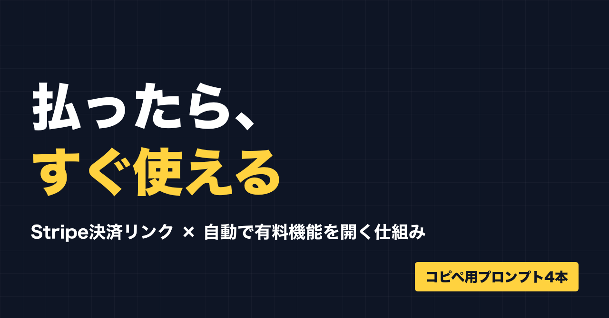
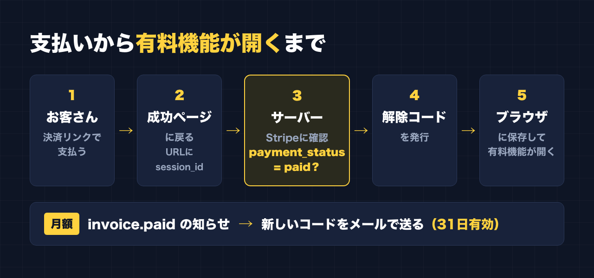
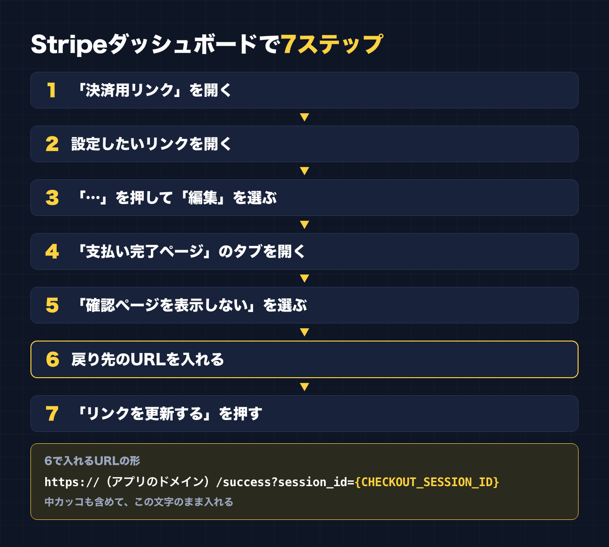
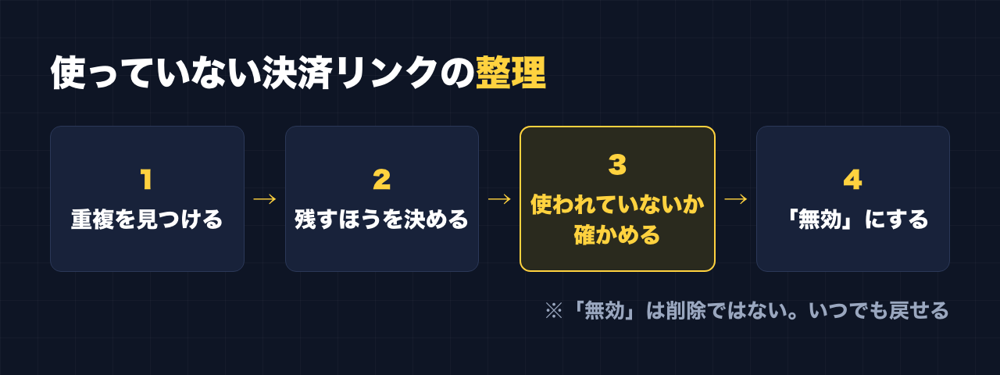

1. タイトルをコピーして、note のタイトル欄に貼る
2. 「本文1をコピー」から順にコピーし、note の本文に貼る
3. 青いラベルの位置に、images フォルダの同じ名前の画像を入れる（本文には貼られません）
※ 見出しが普通の文字になった場合は、その行を選んで「大見出し」を設定してください

お金を払ったら、その場で有料の機能が開く。
2026年9月、自分のツールにこの流れを入れました。
私は「副業ドラフト」という、副業の強みの棚卸しと Threads の下書きを作るツールを作っています。有料プランは、月額2,980円と、買い切り10,000円の2つ。支払いには Stripe の「決済用リンク（Payment Link）」を使っています。
決済用リンクは、コードを書かなくても支払いページが作れる便利な仕組みです。ただ、支払いが終わったあと、お客さんをどこに連れていって、どうやって有料の機能を開けるか。ここは自分で用意しないといけません。
そこで AI（Claude）に頼んで、「支払いが終わったら、そのまま有料の機能が開く」流れを作りました。
先に正直に書いておきます。
- 副業ドラフトは、今のところ利用者ゼロ・売上ゼロです
- この仕組みは、実際の購入ではまだ試していません
なので、「これで売れました」という記事ではありません。「こういう設定と仕組みにした」という手順の記録です。そのかわり、手順は省かずに書きます。
この記事で手に入るもの
- Stripe の決済用リンクで、支払い後に自分のアプリの特定のページへ自動で戻す設定の手順（画面の順番どおり）
- 戻ってきたお客さんが本当に支払ったかを、サーバー側で Stripe に確かめて、有料機能を開ける仕組みの全体像
- 月額プランの場合の「毎月の更新」の考え方（31日の有効期限と、支払いのたびにメールで新しいコードを送る流れ）
- 上の仕組みを AI に作ってもらうための、コピペ用の頼み方（4本）
- お金を動かさずに確かめる「テストモード」の使い方の注意
- 使っていない決済リンクを整理するときの手順
こんな人に向いています
- Stripe の決済用リンクで、自分のツールや会員ページを売ろうとしている
- 支払い後に「LINEで連絡してください」「コードを手で送ります」をやめて、自動にしたい
- コードは自分で書けないが、AI に頼んで作ってもらうことはできる
向いていない人
- 支払いの仕組みそのものを、ゼロから自分で作りたい人
→ この記事は Stripe の決済用リンクを使う前提です
- 「実際に売れた実績」を知りたい人
→ まだ売れていませんし、実際の購入でも試していません
- ログイン機能つきの本格的な会員サイトを作りたい人
→ この記事は、解除コードをブラウザに保存する簡単な方式です
――――ここから有料――――
1. 仕組みの全体像
まず、お客さんから見た流れです。
1. 決済用リンクから支払う
2. 支払いが終わると、自分のアプリの「成功ページ」に自動で戻ってくる
3. 成功ページが、裏でサーバーに「この支払い、本当に終わってる？」と聞く
4. サーバーが Stripe に確かめて、終わっていれば解除コードを発行する
5. 解除コードがブラウザに保存され、その場で有料の機能が開く

ポイントは3と4です。
成功ページのURLを知っているだけで有料機能が開いてしまうと、支払っていない人でも開けてしまいます。だから、「本当に支払ったか」は、必ずサーバー側で Stripe に聞いて確かめます。
そのための目印が、session_id（セッションID）です。Stripe は、支払いが終わったお客さんを戻すときに、URL の後ろにその支払いの番号を付けてくれます。成功ページはこの番号をサーバーに送り、サーバーはこの番号で Stripe に問い合わせます。
問い合わせの結果の中に payment_status という項目があり、これが paid（支払い済み）なら、解除コードを出します。
2. Stripe側の設定：支払い後に自分のページへ戻す
Stripe のダッシュボードで、決済用リンクごとに設定します。月額と買い切りのように複数のリンクがあるなら、それぞれで同じ設定をします。
1. 「決済用リンク」を開く
2. 設定したいリンクを開く
3. 「…」を押して「編集」を選ぶ
4. 「支払い完了ページ」のタブを開く
5. 「確認ページを表示しない」を選ぶ
6. 戻り先のURLを入れる
7. 「リンクを更新する」を押す
6で入れるURLは、この形です。
https://（あなたのアプリのドメイン）/success?session_id={CHECKOUT_SESSION_ID}注意点が2つあります。
- `{CHECKOUT_SESSION_ID}` は、この文字のまま入れます。中カッコも含めて、書き換えません。支払いのときに、Stripe が本物の番号に置き換えてくれます
- `/success` の部分は、自分のアプリで成功ページを置く場所に合わせます。このあと AI に作ってもらうページの場所と、必ずそろえてください

3. アプリ側：AIに作ってもらう頼み方
ここからは、アプリの中身です。私はコードを自分では書かず、AI に頼んで作ってもらいました。
同じものを作るための頼み方を4本用意しました。【 】の中を自分の内容に書き換えて使ってください。
大事なお願いが1つあります。Stripe のシークレットキー（sk_ で始まるもの）は、AI とのチャットに貼らないでください。 キーはサーバーの環境変数（設定画面の「秘密の値」を入れる場所）に自分で入れて、AI には「環境変数 STRIPE_SECRET_KEY に入っている」とだけ伝えます。
プロンプト①：まず全体を確認してもらう
いきなり作らせず、今のアプリの状態を見てもらうところから始めます。
自分のアプリに、Stripe の決済用リンク（Payment Link）で支払った人が、支払い後すぐに有料機能を使えるようにする仕組みを追加したいです。
まだコードは書かず、まず今のアプリの構成を見て、どこに何を追加するかの計画だけ出してください。
・アプリの種類：【例：自分で作ったウェブアプリ。Render で動かしている】
・プラン：【例：月額2,980円／買い切り10,000円。決済用リンクはプランごとに1本ずつ】
・Stripe の決済用リンクの支払い完了後の戻り先：
https://【ドメイン】/success?session_id={CHECKOUT_SESSION_ID}
・Stripe のシークレットキーは環境変数 STRIPE_SECRET_KEY に入れる（チャットには貼らない）
やりたい流れ：
1. /success ページが URL の session_id を読み取り、サーバーに送る
2. サーバーは Stripe の API でそのチェックアウトセッションを取得する
3. payment_status が paid のときだけ、解除コードを発行する
4. 解除コードをブラウザに保存し、有料機能を開く
計画には、追加するファイル、変更するファイル、必要な環境変数、考えられる危ない点を入れてください。プロンプト②：成功ページとサーバーの確認を作ってもらう
計画に納得したら、作ってもらいます。
さきほどの計画どおりに、次の2つを作ってください。
【成功ページ（/success）】
・URL の session_id を読み取り、サーバーの確認用の入口に送る
・確認中は「お支払いを確認しています」と表示する
・確認できたら、返ってきた解除コードをブラウザに保存し、有料機能のページへ進める
・確認できなかったら「確認できませんでした。お手数ですが【連絡先】までご連絡ください」と表示する。エラーの中身は画面に出さない
【サーバーの確認用の入口】
・受け取った session_id で、Stripe の API からチェックアウトセッションを取得する
・payment_status が paid のときだけ、解除コードを発行して返す
・paid でないとき、session_id がおかしいとき、Stripe がエラーを返したときは、解除コードを出さない
・どのプランの支払いか（月額か買い切りか）を、セッションの中身から判断する
・月額の場合、解除コードの有効期限は支払日から31日にする
守ってほしいこと：
・シークレットキーは環境変数 STRIPE_SECRET_KEY から読む。コードに直接書かない
・支払い済みかどうかの判断は、必ずサーバー側でする。成功ページの URL にアクセスしただけでは開かないようにする
・同じ session_id で何度確認しても、困ったことにならないようにする
・作ったあと、どうやって動作を確かめればいいかも教えてくださいプロンプト③：月額の更新（webhook）を作ってもらう
月額プランは、解除コードが31日で切れます。毎月の支払いがあったら、新しいコードを送る必要があります。
Stripe には、支払いなどが起きたときにこちらのサーバーへ知らせてくれる「webhook（ウェブフック）」という仕組みがあります。毎月の請求が支払われたときの知らせは、invoice.paid という名前です。
月額プランの更新の仕組みを追加してください。
・Stripe の webhook を受け取る入口を作る
・invoice.paid を受け取ったら、その支払いをした人のメールアドレスに、新しい解除コード（支払日から31日有効）をメールで送る
・メールの送信には【使うサービス：例 自分が使っているメール送信サービス】を使う。その設定値は環境変数に入れる
・webhook の署名を必ず確認する。署名の秘密の値は環境変数 STRIPE_WEBHOOK_SECRET から読む
・同じ知らせが2回届いても、困ったことにならないようにする
・メールの文面は短く、「新しい解除コード」「有効期限」「使い方」「困ったときの連絡先」だけにする
作ったあと、Stripe のダッシュボードのどこで webhook の送り先を登録すればいいか、手順も教えてください。プロンプト④：自分で確かめるためのチェックを作ってもらう
作ってもらったあと、何を確かめればいいかを出してもらいます。
今回作った支払い後の仕組みについて、公開前に確かめるべきことを、チェックリストにしてください。
私はコードが読めないので、画面の操作だけで確かめられる方法でお願いします。
入れてほしい観点：
・支払っていない人が /success を直接開いても、有料機能が開かないか
・session_id に適当な文字を入れたとき、どう表示されるか
・月額と買い切りで、解除コードの有効期限が正しく分かれているか
・webhook の署名がおかしい知らせを送ったとき、はじかれるか
・シークレットキーがコードや画面に出ていないか4. お金を動かさずに確かめる：テストモード
ここは、正直に書いておきます。
私はこの仕組みを、実際の購入ではまだ試していません。 本当に買ってもらったときに最後まで動くかは、まだ確かめられていない状態です。
これから同じものを作る人には、Stripe の「テストモード」を使うことをおすすめします。Stripe には、本物のお金を動かさずに、支払いの流れを試せるテストモードがあります。テスト用のカード番号で支払いをして、成功ページに戻るか、有料機能が開くか、webhook が届くかを確かめられます。テスト用のカード番号は、Stripe の公式ドキュメントに載っています。
テストモードで気をつけること：
- テストモードと本番では、決済用リンク・キー・webhook の登録が別々です。テストモード側にも、同じ「支払い完了ページ」の設定をします
- アプリの環境変数に、テスト用のキーを入れているのか本番用のキーを入れているのか、分かるようにしておく
- 確かめ終わったら、本番用のキーと本番の決済用リンクに戻っているかを確認する
プロンプト④のチェックリストは、テストモードで上から順に試すのがいいと思います。
5. 使っていない決済リンクを整理する
作業の途中で、買い切りの決済用リンクが重複しているのが見つかりました。
片方を「無効」にしましたが、その前に AI に、そのリンクがアプリの中や案内文など、どこかで使われていないかを確かめてもらいました。使われているリンクを止めると、そこから来たお客さんが支払えなくなるからです。
整理するときの順番：
1. 決済用リンクの一覧で、同じ商品・同じ価格のリンクが複数ないか見る
2. どちらを残すか決める（アプリで実際に使っているほう）
3. 止めるほうのリンクが、アプリ・LP・note・LINE の案内などに貼られていないか確かめる
4. どこにも使われていなければ「無効」にする
「無効」は削除ではありません。あとから、いつでも有効に戻せます。迷ったら削除せず、無効にしておくのが安全です。

6. やってみて分かった注意点
- 支払ったかどうかは、必ずサーバーで確かめる。 成功ページのURLだけで開く仕組みにしない
- `{CHECKOUT_SESSION_ID}` はそのまま入れる。 自分で番号を入れたり、カッコを消したりしない
- 成功ページの場所をそろえる。 Stripe に入れたURLと、アプリの成功ページの場所が違うと、戻ってきても何も起きない
- シークレットキーはチャットに貼らない。 環境変数に自分で入れる
- 月額は「切れたらどうなるか」まで決める。 31日で切れて、毎月の支払いでメールが届く。この流れを、お客さんへの案内にも書いておく
- 解除コードはブラウザに保存される。 別の端末やブラウザで使うとき、保存を消してしまったときにどうするかを、案内しておく（メールでコードを受け取れるようにしておくと、案内しやすくなります）
- 実際の購入で確かめるまでは「完成」ではない。 テストモードで確かめたうえで、最初のお客さんのときは自分でも流れを見守る
おわりに
決済用リンクは、支払いページを作るところまではとても簡単です。でも、「払ったらすぐ使える」までつなぐには、支払い完了ページの設定と、サーバーでの確認が必要でした。
設定は Stripe の画面で7ステップ。確認の仕組みは、AI に頼めば作ってもらえます。ただし、本当に動くかを確かめるのは自分の仕事です。私もまだ、実際の購入での確認が残っています。
まずは、テストモードで1回、支払いから有料機能が開くところまで通してみてください。
最後に
ここからは宣伝です。
公式LINEでは、「特典」と送っていただくと、LINE限定のプロンプト5本をお届けしています。
https://lin.ee/RzyA13P
今回の仕組みを入れた「副業ドラフト」は、AI の質問に答えるだけで、副業に使える強みの棚卸しと Threads の下書きを作るツールです。Threads の下書き3本までは無料で使えます。
https://note-threadssf.onrender.com
Threads では、こうした試行錯誤を日々発信しています。
https://www.threads.com/@shachiku_mao
最後まで読んでいただき、ありがとうございました。